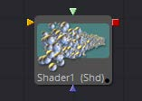

第九章 DeepPixel Tools 深度像素工具
|
|
|
 |
|
 |
|
|  | |
 |
Ambient Occlusion [SSAO]
环境光遮挡（Ambient Occlusion，AO）是当场景被均匀的散射球形光源包围时引起的照明。可以将场景想象成被一个巨大的球体围绕，该球体从其表面均匀地发出光。AO捕获低频照明。它不会捕获锐利的阴影、漫反射（Diffuse）或高光（Specular）照明。因此，AO通常与漫反射和高光照明结合使用以创建完整的照明解决方案。
Ambient Occlusion工具会在3D渲染的场景中生成全局照明效果作为后期效果。它可以快速近似昂贵的光线跟踪的全局照明。作为后期效果，它会像Shader、Texture和VolumeFog工具一样暴露类似的锯齿问题。 因此，在某些情况下可能会出现伪影。
Usage 用法
AO工具很少能立即使用，而是需要进行一些调整。设置过程包括调整KernelRadius和NumberOfSamples来获得所需的效果。
KernelRadius取决于场景的自然“比例”。最初看起来根本没有AO。此时，KernelRadius太小或太大，必须找到可以工作的值。
Inputs 输入
- 图像 （必需的）： 需要RGBA、Z深度和法线。
- 场景（必需的）： 渲染图像的场景或3D相机。
如果未提供这些工具中的任何一个，则该工具将失败并出现带描述的错误。
Controls 控件

Output Mode 输出模式
- 颜色： 应用了Ambient Occlusion的传入图像
- AO： 将Ambient Occlusion输出为灰度图像。
白色对应于颜色通道中应明亮的区域，而黑色对应于应较暗的区域。这使你可以通过组合单独的环境/漫反射/高光通道来创建照明方程。将AO作为单独的缓冲区可让创作自由地以各种方式组合通道。
Kernel Type 内核类型
为了确定AO，光线从被着色的表面上的一点向外投射到一个大的封闭球体上。
未被遮挡的光线（即到达球体的光线）的数量决定了AO的因子。
- Hemisphere 半球： 光线朝向朝向法线表面的半球投射。该选项比Sphere更真实，除非有充分的理由，否则应使用此选项。平面将获得100％的环境强度，而其他部分将变暗。
- Sphere 球： 光线投射到以着色点为中心的球体。提供此选项可产生风格效果。平面将接收50％的环境强度，而其他部分将变暗或变亮。
Number of Samples 样本数
增加样本数量，直到AO传递中的伪影消失为止。较高的值可以产生更好的结果，但也会增加渲染时间。
Kernel Radius 内核半径
Kernel Radius控制3D空间中滤镜内核的大小。对于每个像素，它控制一个对象在3D空间中搜索遮挡物的距离。滤镜内核很可能是挑剔的，可能需要针对每个单独的场景进行手动调整。
如果做得太小，可能会错过附近的遮挡器。如果做得太大，AO的质量将会降低，并且需要显着增加样本数量才能恢复质量。
该值取决于场景的Z深度。这意味着在场景中具有巨大的Z值时，内核大小也需要很大。Z值很小时，较小的内核大小（例如0.1）就足够了。
Lift/Gamma/Tint 抬升/伽马/色泽
用于调整AO的艺术效果。
Use OpenCL 使用OpenCL


提示 将多个AO通道与不同的内核半径相结合可以产生更好的效果。
已知问题
透明/半透明： AO被设计用于不透明的对象。问题将有两种：带有透明接收器的问题和带有透明遮挡器的问题。您可以通过将透明/半透明对象拆分为单独的场景并仅对不透明对象计算AO来解决这些问题。
粒子： 除非粒子是不透明的实体，否则不要在粒子上使用AO。这又只是透明度问题。抗锯齿的边缘（另一种透明形式）也将导致AO问题。你对此无能为力。
超级采样： 参考抗锯齿边缘。为了使它起作用，需要在大图像中计算AO，然后再将其下采样到最终图像。
视图依赖关系： AO方法在视图空间中工作，结果取决于视图。这是该技术本身的局限性。这意味着变暗的数量可能会根据视图位置而有所不同，而实际上它应该是恒定的。如果对象上的某个点的AO为0.5，则移动相机可能会将其更改为0.4。
AO的烘焙： UV渲染器可用于将AO烘焙到模型的纹理中。
Depth Blur [DBl]
Depth Blur工具主要用于创建焦距或景深效果。它基于所包含的Z通道值对3D渲染的图像进行模糊处理，还可以通过Blur Channel控件将其用于一般的每像素模糊效果。如果连接了Blur Image输入，则使用该图像的通道将用于控制模糊。
Controls 控件

Filter 滤镜
这些按钮用于选择用于应用模糊的滤镜。
Box 框
这会将应用基于深度的方框模糊效果到图像。
Soften 柔化
这将应用基于深度的常规软化滤镜效果。
Super Soften 超级柔化
这将应用基于深度的高质量软化滤镜效果。
Blur Channels 模糊通道
选择以下选项之一以确定用于控制应用于每像素的模糊等级的通道。它将使用来自主图像输入的通道，除非有工具连接到流程上的Blur Image输入。
Lock X/Y 锁定X/Y
启用后，此控件会将X和Y模糊滑块锁定在一起，以实现对称模糊。
Blur Size 模糊尺寸
此滑块用于设置应用于图像的水平和垂直模糊的强度。
Focal Point 焦点
仅当Blur通道设置为使用Z缓冲区时，此控件才可见。
使用此控件选择模拟焦点的距离。减小该值会使Focal Point离摄像机更近，增大该值会使焦点离摄像机更远。
在显示的图像上拖动Pick按钮（指针变为滴管），然后选择Z缓冲区值。如果图像不包含有效的Z缓冲区，则该值不会发生变化。
Depth of Field 景深
此控件用于确定焦点区域的深度。焦点位于区域的中间，区域内所有具有Z值的像素保持焦点。例如，如果从图像中选择了焦点并将其设置为值300，并且将景深设置为200，则Z值在200到400之间的任何像素都将保持焦点。
Z Scale Z缩放
按所选量缩放Z缓冲区值。增加值会导致Z通道中的距离扩大。而降低值会使其收缩。这对于放大深度效果很有用。它也可以用于软化模糊的边界。某些深度值较小的图像可能需要将Z比例设置得非常低，低于1.0。
Fog [Fog]
Fog工具用于在包含有效Z缓冲区通道的3D渲染图像上创建模拟雾效果。可以基于选定的Z通道平面将雾放置在渲染图像的各个元素的前面或后面。有关更多信息，请参见辅助通道（Auxiliary Channels）一章。
Fog工具上输入的第二个图像可用于提供用作雾源的图像。如果未提供图像，则雾由单一颜色组成。通常，这里应提供某种噪声图。
Controls 控件

Z-Buffer Near Plane and Far Plane Z缓冲区近平面和远平面
这些控件用于选择场景中的雾化程度。要选择一个值，请将Pick按钮拖动到正在查看的图像上要放置平面的区域。
Near Plane用于选择雾变得稀薄的深度。Far Plane用于选择雾变得不透明的深度。
Z Depth Scale Z深度缩放
此选项按选定的量缩放Z缓冲区值。增大该值将导致Z通道中的距离扩大，而减小该值将使其收缩。这对于放大雾化效果很有用。
Fog Color 雾颜色
此选项显示和控制当前雾颜色。Alpha调整雾的透明度值。
Fog Opacity 雾不透明度
使用此控件可以调整雾的不透明度。
Shader [Shd]
Shader工具可以控制渲染图像中元素的照明、反射贴图和3D阴影。反射贴图图像（连接到绿色输入）可以投影到场景中的所有元素上，或投影到通用控件中Object和Material ID通道选择的元素上。效果遮罩也可用于限制此工具的效果。
Shader工具依赖于3D渲染图像中X、Y和Z法线贴图通道的存在。如果不存在这些通道，则此工具无效。
有关更多信息，请参见《用户手册》中的辅助通道（Auxiliary Channels）一章。
Light Tab 光照选项卡

Ambient 环境
Ambient控制场景或所选对象中存在的环境光量。这是添加到所有像素的基本亮度，即使在完全遮蔽的区域也是如此。
Diffuse 漫反射
此选项控制场景或所选对象中存在的Diffuse颜色的量。这是物体的正常颜色，在所有方向上均等反射。
Specular 高光
此选项控制场景或所选对象中出现的Specular颜色的数量。这是从光源反射到眼睛的光泽高光的颜色。
Reflection 反射
此选项控制场景中或所选对象的反射贡献量。高等级使对象看起来像是镜像，低级别则覆盖了微小的反射，从而提供了抛光效果。如果未连接反射贴图，则无效。
Reflection Type 反射类型
从这三个按钮中进行选择，以确定用于在第二个输入中投影图像的反射贴图的类型。
- Screen 屏幕： Screen使反射贴图看起来像是投影到视点后面的屏幕上。
- Spherical 球形： Spherical使反射贴图看起来像是投影到整个场景周围的巨大球体上。
- Refraction 折射： Refraction会使反射贴图看起来像是根据场景中的几何形状折射或扭曲一样。
Equator Angle 赤道角
Equator Angle控制由Shader工具为场景或所选对象生成和映射的光的左右角度。
Polar Height 极高度
Polar Height控制由Shader工具为场景或选定对象生成和映射的光线的上下角度。
Shader Tab 着色器选项卡

Edit Diffuse and Specular 编辑漫反射和高光
启用这些控件可以在Shader样条曲线窗口中编辑各个通道的“ Shader”曲线。
In and Out 入和出
这些选项用于显示和编辑样条线上的点值。
Specular Color 高光颜色
使用Diffuse曲线可操纵漫反射着色，而使用Specular曲线可影响高光着色。框选多个点上以将其分组选择。右键单击将显示一个菜单，其中包含用于调整样条曲线的选项。有关样条窗口选项和控件的完整说明，请参见手册中控件（Controls）一章中的LUT编辑器（LUT Editor）文档。
Texture [Txr]
Texture工具可以控制渲染图像中元素的纹理贴图。纹理贴图图像（连接到绿色输入）可以包裹在对象周围以替换当前纹理。纹理工具依赖于3D渲染图像中U和V Map通道的存在。如果不存在这些通道，则此工具无效。
注意： 背景像素的U和V值可能为0.0，这会将这些像素设置为纹理的角像素的颜色。要将纹理限制为特定对象，请使用基于对象或其物体或材质ID通道的Alpha的效果遮罩。有关更多信息，请参见辅助通道（Auxiliary Channels）一章。
Texture Tab 纹理选项卡

Swap UV 交换UV
选中此复选框后，将交换源图像的U和V通道。
Flip Horizontal and Vertical 翻转水平和垂直
启用此控件后，将水平和/或垂直翻转纹理贴图图像。
Rotate 90 旋转90
启用此复选框后，纹理贴图图像将旋转90度。
U and V Scale U和V缩放
这些控件更改用于映射纹理的U和V坐标的比例。更改这些值可在应用纹理贴图时有效地放大和缩小纹理贴图。
U and V Offset U和V偏移
调整这些控件以偏移U和V坐标。更改值会导致纹理看起来沿对象的几何形状移动。